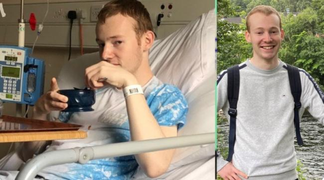

Updates
Scottish Society of Gastroenterology Winter Meeting December 2022
Dr Rebecca Hall recently presented our work linking patient-reported well-being as a potential marker for our scientific biomarker studies
Abstract Powerpoint Slides28 December 2022
Molly Halligan has joined our Patient Public Involvement team
Listen to her experience in taking part in IBD research.
29 November 2021

Read Kris' Story Here
Kris is one of our study's patient representative and he shares his story with The Herald here. His experience and views help us shape the design and conduct of our research.
29 June 2021